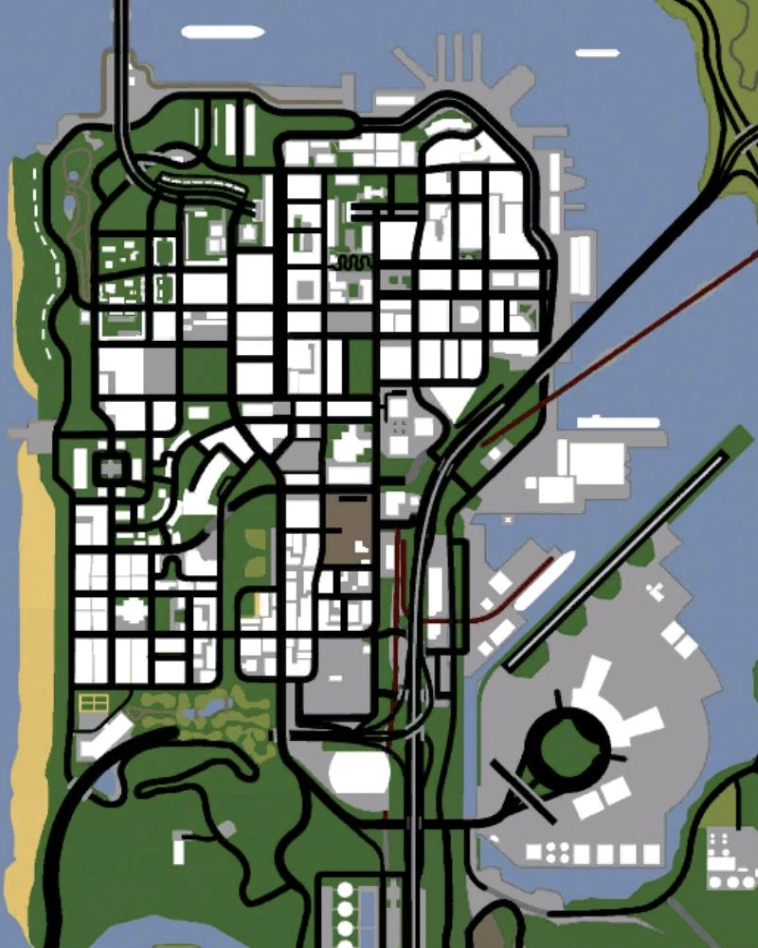

Mapa San Fierro
Misje według postaci
CJ
- Wear Flowers In Your Hair
- 555 We Tip
The Truth
- Green Sabre
- Badlands
Wu Zi Mu (Woozie)
- Amphibious Assault
- Mountain Cloud Boys
- Ran Fa Li
Ciekawe miejsca
- Gant Bridge i Bay Area
- Downtown / Financial District
- Red County
- Chinatown
- Industrial Area
Znaczki / kolekcje
- Snapshots (50) – odkrycie wszystkich zdjęć w mieście
- Skoki kaskaderskie – kasa + procent ukończenia gry